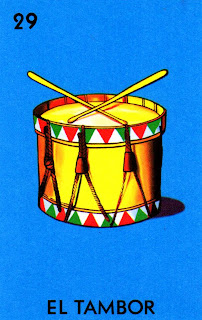

"No te arrugues cuero viejo, que te quiero pa’ tambor.."

"The Tambor card in Lotería represents rhythm, celebration, and energy. Depicted as a drum, it symbolizes the heartbeat of a celebration, often played during festivities and dances. In Mexican culture, the tambor is an essential instrument in many traditional songs and ceremonies, providing the pulse that drives joy and brings people together."
Regresar